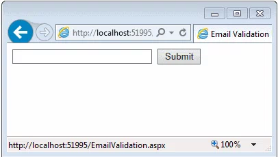

Développeur java / Js de + de 15 ans d'expériences.
Référent technique à la Mutuelle de Poitiers Assurances.
La problématique
Création d'un projet NodeJs (POC, d'un cli, etc...) nécessitant une petite BD.

Les solutions
Utiliser les bases de données de l'entreprises
Les solutions
Se charger soit moi-même de la sérialisation des données.
Sauf que je suis feignant.
Utiliser une librairie existante : Lokijs
Base de données NoSQL écrite uniqument en JS.
Rapide (car en mémoire)
Node Js ou browser compatible
Optionel autosave (Redis style store)
Api à la Mongo.
Sauvegarde d'un fichier Json comme base de données.
- Création d'une instance :
```javascript
const db = new Lokijs('loki.json');
```
- Création d'une collection
```javascript
const maCollection = db.addCollection('uneCollection');
```
- insertion d'un document
```javascript
maCollection.insert({...});
```
- lecture de la collection
```javascript
const allDatas = maCollection.data;
```
- update d'un document
```javascript
maCollection.update(obj);
```
- Suppression d'un document
```javascript
maCollection.remove(obj);
```
Demo
Des questions ?